Qualitative Processing
The qualitative half of the trade-idea process that completes the quant work: identify a company's Key Performance Indicators (KPIs), then INFER its Management Operating Plan (MOP) from them — because KPIs move the stock BEFORE the reported Revenue & Earnings ever land. Worked in full on Zendesk (NYSE:ZEN).
Having found a quant outlier, you now understand the business beneath the numbers. Beneath reported Revenue & Earnings sits a business driven by the Management Operating Plan (MOP) and measured by KPIs — the chain is MOP -> KPIs -> Results. No company states its MOP line-for-line, so you identify the KPIs from Investor Relations materials (Events & Presentations, shareholder letters, earnings calls) and infer the MOP by piecing the clues together. Do your own work (QoQ growth, geographic revenue mix / FX-translation risk); Google is your friend for any metric you don't recognise. The point: KPIs are what actually drive Revenue & Earnings, so the stock moves immediately on KPI news and analysts follow with rating and price-target changes.
The gist
- Fundamental analysis evolves in three stages: Quant' Discovery (forward-looking valuation — find positive/negative outliers, turnarounds/value traps) -> Quant' Evidence (backwards-looking financial statements — do they support the valuation?) -> Qual' Drivers (backwards & forwards KPIs & MOP — do THEY support the valuation?). This lesson is the Qual' Drivers stage.
- The chain is MOP -> KPIs -> Results. The Management Operating Plan DRIVES the results (Revenue & Earnings); KPIs MEASURE the effectiveness of the MOP. The P&L is by nature backwards-looking (last quarter/year); beneath it is a business the MOP runs.
- No company tells you its MOP line-for-line. You identify the KPIs first, then INFER the MOP by piecing it together. The clues live on public companies' Investor Relations sites — regulation forces continuous updates via earnings releases PLUS verbal + written comms (shareholder letters, Events & Presentations, earnings calls). 'Management is literally telling you in plain English what the Drivers of the business are.'
- Do your own work and Google is your friend: compute QoQ growth from raw counts yourself, note the geographic revenue mix (a strong Dollar can derail Revenue Growth when foreign-currency revenue is translated back to USD), and Google any metric (net expansion rate, ARR, RPO) you don't recognise.
- Zendesk (NYSE:ZEN, quote $147.52) SaaS KPI dashboard: dollar-based net expansion 112% (healthy 110-120%); % of total ARR from $100K+ customers 49%; % of Support ARR from 100+-agent customers 44%; Total RPO +44% y/y (Long-term +65%, Short-term +36%); new + expansion bookings up ~60%; customer accounts Support +2-3%, Chat -2-3%, other products +8-9%, total +2-3%.
- Why it matters for the trade: any positive/negative change in the KPIs changes future Revenue & Earnings expectations. The stock moves IMMEDIATELY on KPI news and analysts follow by upgrading/downgrading ratings and price targets — so the business (KPIs) moves the stock before the reported results do.
The evolution: Discovery -> Evidence -> Drivers
- Fundamental analysis runs left-to-right through three stages: Quant' Discovery -> Quant' Evidence -> Qual' Drivers.
- Quant' Discovery = Forward-Looking Valuation: identification of positive & negative outliers, turnarounds / value traps.
- Quant' Evidence = Backwards-Looking Financial Statements: do the financial statements provide evidence to support the valuation?
- Qual' Drivers = Backwards & Forwards-Looking KPIs & MOP: identify the KPIs & MOP — do they provide evidence to support the valuation? This lesson is the Qual' Drivers stage.
The qualitative phase does not replace the quant work — it completes it, testing whether the drivers beneath the numbers actually justify the outlier valuation you discovered.
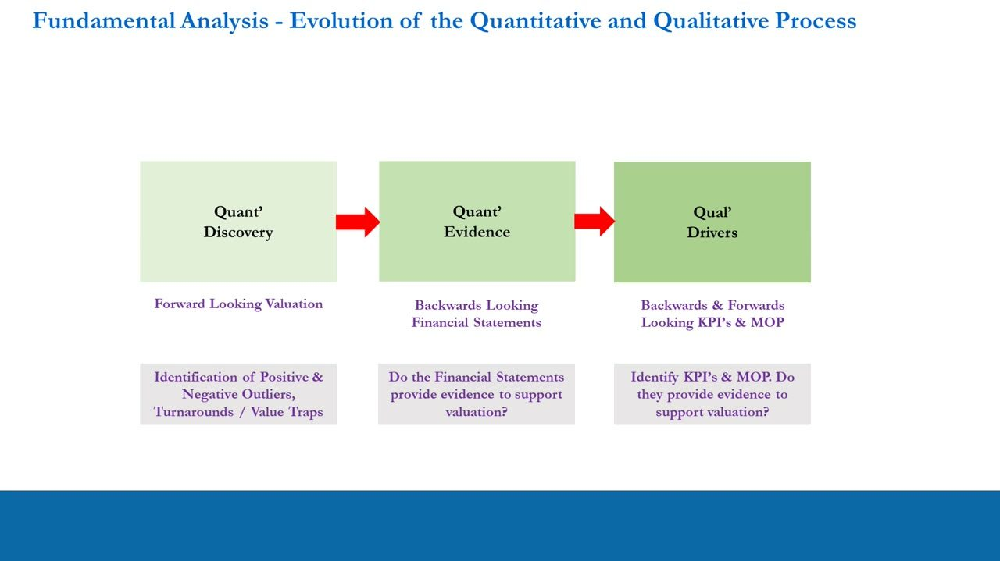
Where this sits in the Micro Views map
- Fundamentals (Quantitative + Qualitative Processes) split into Macro' Views (Portfolio Bias) + Micro' Views.
- Micro' Views has four steps mapped to stages: Identify Outliers (Quantitative, Discovery + Evidence); Learn Stock Info (Qualitative, Evidence); Identify KPIs (Qualitative, Drivers 1); Identify Catalysts (Qualitative, Drivers 2).
- At this stage you have discovered an outlier, understood the supporting quant evidence from the financial statements, and learnt basic stock info (what the product/service is). Now you move to KPIs and the MOP.
- Assume you have found a good quant stock: increasing Revenue and/or Earnings Growth relative to its peer group, on a Premium (superior) valuation. Your job now: understand what the company does and has done (past) and where it is going (future).
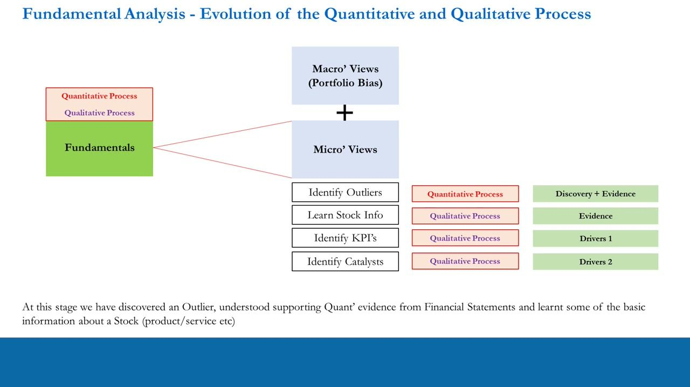
Why KPIs matter — the result vs what creates it
- The P&L / income statement (a quarter or year-end) is a statement of the RESULTS of company operations — by its very nature backwards-looking (last quarter/last year).
- Zendesk FY2020 income statement (in thousands): Revenue Q4'20 $283,498 vs Q4'19 $229,871; FY2020 $1,029,564 vs FY2019 $816,416. Net loss Q4'20 $(70,036), FY2020 $(218,178). Net loss per share FY2020 $(1.89).
- Beneath the end result there is something that creates it: a business, driven by the MOP and measured by KPIs.
- So the task is to look underneath the hard numbers and find the qualitative drivers that produced them.
The reported numbers are the OUTPUT. To forecast whether they will keep beating (or missing) expectations you have to understand the drivers underneath, not just read the last result.
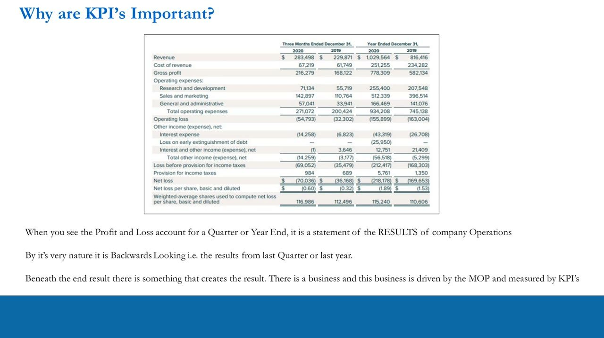
MOP -> KPIs -> Results — infer, don't read
- The qualitative side covers MOP -> KPIs; the quantitative side is the Results. The sequence is MOP -> KPIs -> Results.
- The Management Operating Plan (MOP) drives the results of the business; it is the KPIs that measure the effectiveness of the MOP.
- Crucially: there is NO resource where management tells you line-for-line what the MOP is.
- What you do instead: identify a company's KPIs, then INFER the MOP by piecing it all together.
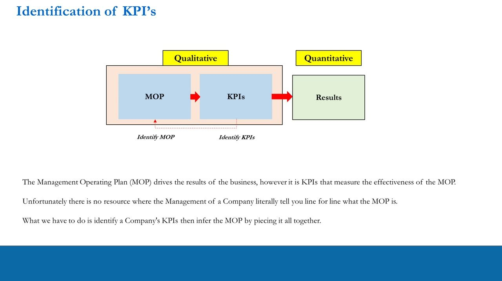
Always ask: why was the quant good?
- There will always be a reason the quant was good: a reason the market forecast Earnings/Revenue Growth better than the peer average, and a reason it rates the company on a higher-than-average PE / PEG.
- i.e. there is a reason people are (relatively) putting dollars into this stock at the expense of similar businesses. Your job is to find the reason(s).
- It is usually a superior product/service the market wants to own at the expense of stocks with inferior offerings — they are taking market share.
- View all the qualitative work through this lens: why is growth so good (bad)? Does the stock deserve its assigned premium/discount? Will it keep beating (missing) expectations — and is that a high probability? You answer this via KPIs and the MOP.
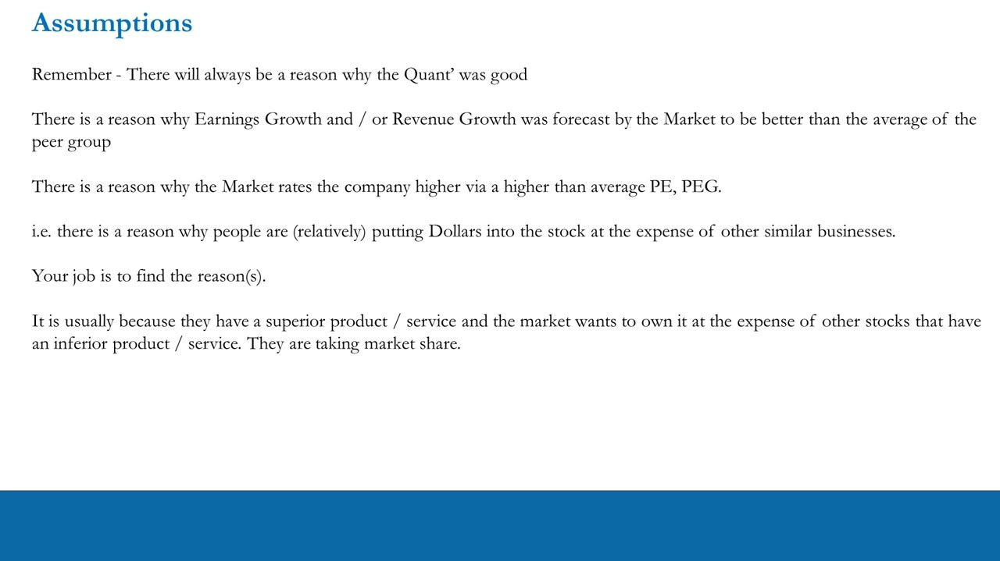
The treasure trove: Investor Relations
- The Investor Relations websites of PUBLIC companies are a treasure trove for the qualitative phase — you already visited them in the quant phase for the financial statements.
- By regulation, public companies HAVE TO update investors continuously on the state of the business — through quarterly earnings releases AND additional verbal + written communication.
- Companies can do the minimum (inactive between earnings) or be highly active and engaging — that activity level itself matters (revisited later under Catalysts).
- Zendesk IR site (investor.zendesk.com): note the 'Events and Presentations -> Presentations' menu; stock quote $147.52 (+2.03, 1.4%) NYSE:ZEN; buttons for the Q4 2020 Shareholder Letter, Q4 2020 Earnings Call, 2020 Analyst & Investor Event.
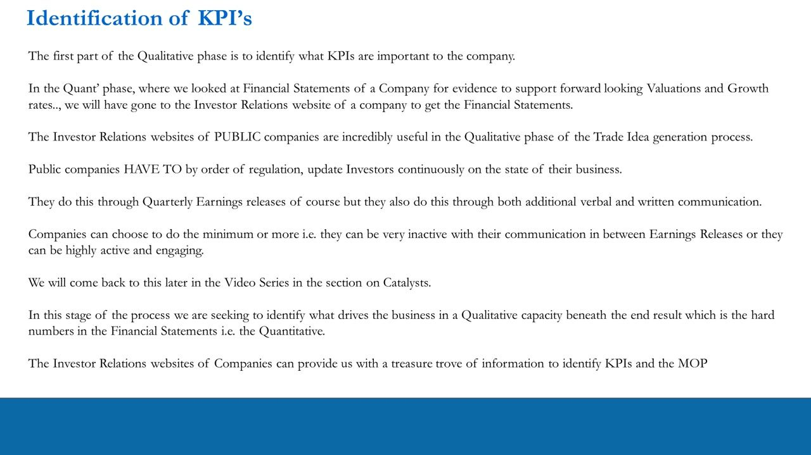
Events & Presentations reveal the drivers
- Under Presentations, Zendesk lists its quarterly Shareholder Letters (Feb 4, 2021 = Q4 2020 Shareholder Letter, PDF 17.60 MB; Oct 29, 2020 Q3; Jul 30, 2020 Q2; Apr 30, 2020 Q1).
- Company events and presentations give insight into what management is focused on: between earnings reports, shareholders are updated on key metrics management cares about.
- This is great for identifying which metrics OTHER than Revenue and Earnings the company focuses on — these are the Drivers of the business, and they infer the MOP.
- 'Management is literally telling you in plain English what the Drivers of the business are.'
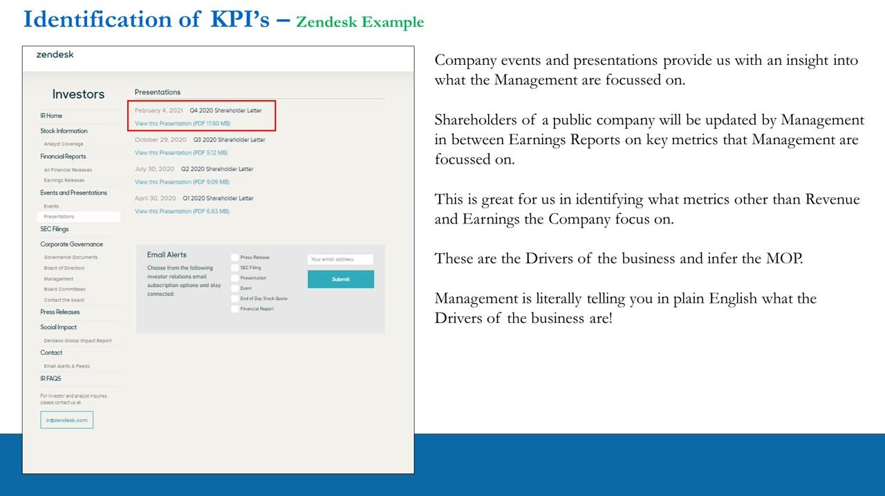
Context from the shareholder letter — guidance & the 5-year plan
- From the Q4 2020 letter: Zendesk aims to 'more than triple our revenues over the next five years,' re-accelerating growth in 2021 from the Q4 2020 exit rate.
- For 2021, management expects revenue of $1.280-1.305 billion — approximately 26% growth from 2020 at the midpoint.
- RESULTS card: $283M Q4 2020 revenue, +23% Y/Y growth. GUIDANCE card: $291-296M Q1 2021 revenue; $1.280-1.305B full-year 2021 revenue.
- This builds the context the KPIs live inside: it is the MOP and KPIs that drive these headline numbers.
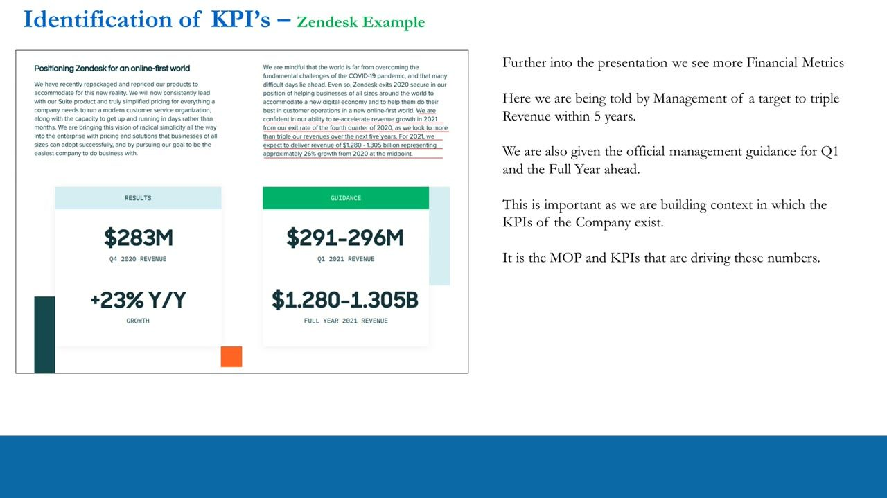
KPIs from the letter — tickets & bookings
- Entering 2021 with momentum: robust demand from new and existing customers, reflected in the growth rates of ticket volume and gross bookings; platform traffic rose meaningfully vs 2019.
- After the initial pandemic shock, quarterly new business + expansion bookings grew nearly 60% from end-Q1'20 to end-Q4'20 — the strongest year-over-year new-business-bookings growth in three years.
- Metrics noted as important to the MOP: Ticket Volume, Gross Bookings, Quarterly New Business, Expansion Bookings.
- KPIs captured: Indexed New Tickets; Indexed Bookings (New Business & Expansion); close to +60%.
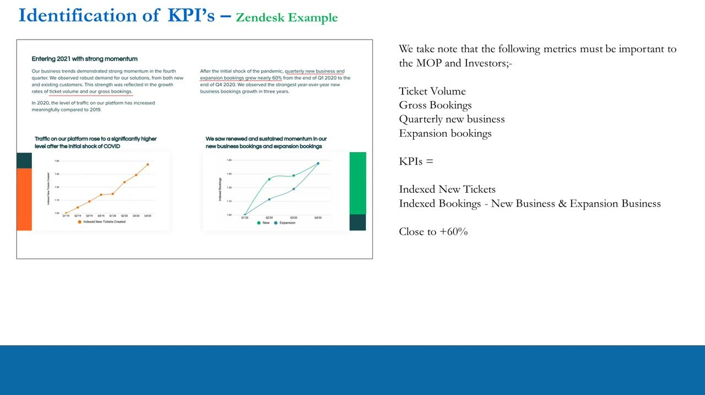
SaaS KPIs — net expansion rate & ARR mix
- Dollar-based net expansion rate (quantifies annual expansion within existing customers): 112% at end-Q4'20, vs 112% Q3'20 and 116% Q4'19. A healthy range in a normal market is 110%-120%. Quarterly: Q4'19 116%, Q1'20 119%, Q2'20 ~115%, Q3'20 112%, Q4'20 112%.
- Enterprise proxy: % of Support ARR from paid customers with 100+ Support agents was ~44% at end-Q4'20 (43% Q3'20, 43% Q4'19).
- As Zendesk broadened its solutions, that single-product proxy became less representative, so it also shows % of total ARR from customers with ARR of $100,000+ = ~49% at end-Q4'20 — the steeper curve shows enterprise implementations increasingly driving revenue.
- KPIs captured: Dollar-Based Net Expansion Rate 110%-120%; % of total ARR by $100K+ customers 49%; % of Support ARR from customers with 100+ agents 44%.
Net expansion rate = beginning-period revenue + upgrades - downgrades - churn, all divided by beginning-period revenue; above 100% means growth from the existing base more than offsets losses. ARR = Annual Recurring Revenue = the contracted recurring revenue of term subscriptions normalised to one year (= MRR x 12).
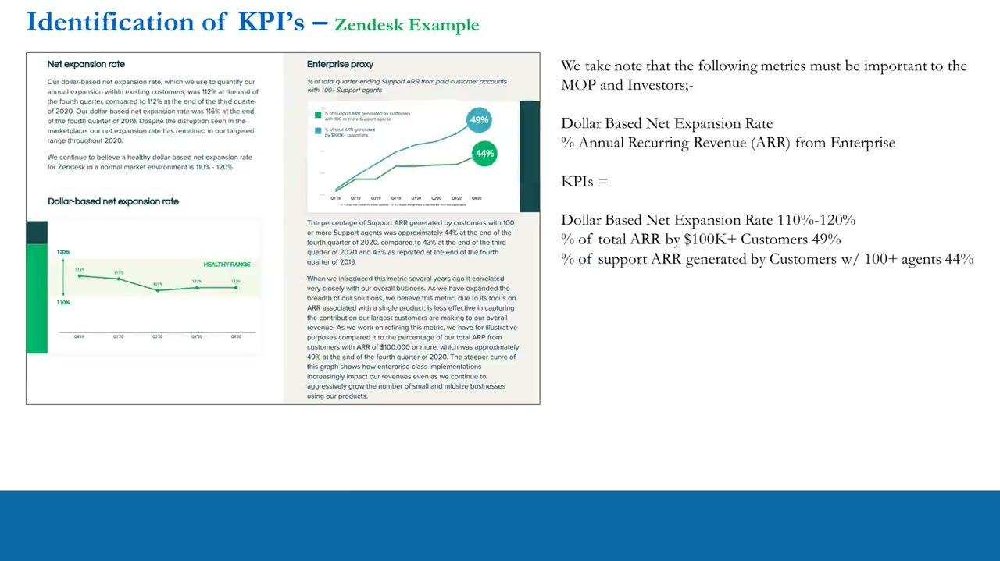
RPO — remaining performance obligations
- Total RPO growth accelerated sequentially in Q4, growing 44% year-over-year; Short-term and Long-term RPO grew 36% and 65% y/y respectively.
- RPO by quarter (in millions): Q4'19 Total $641 (LT $181 / ST $460); Q1'20 $673 ($184/$489); Q2'20 $713 ($205/$508); Q3'20 $800 ($240/$560); Q4'20 $925 (LT $298 / ST $627).
- KPIs captured (QoQ): Total RPO % Growth +44%; Long-Term RPO % +65%; Short-Term RPO % +36%.
- If you come to a metric like RPO cold, with no knowledge — how do you figure out what it means?
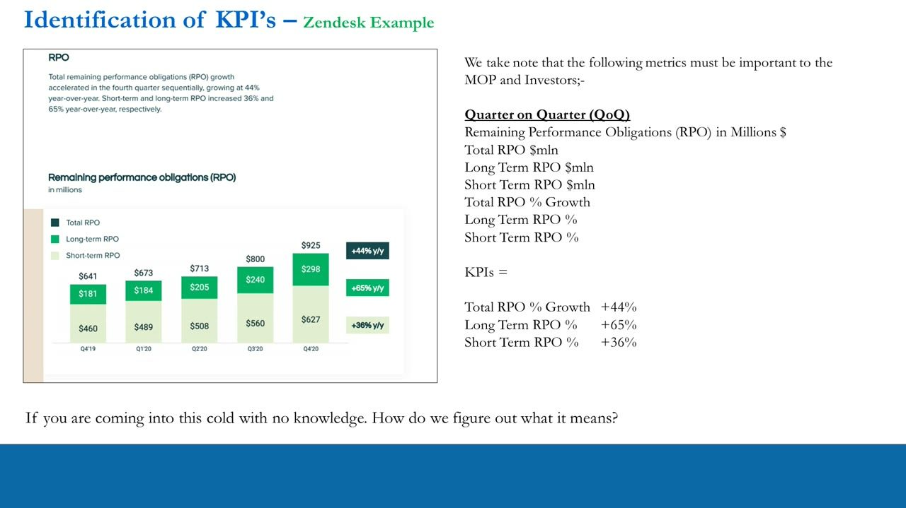
Google is your friend — RPO (ASC 606) worked example
- Google unfamiliar metrics. Net expansion rate, ARR (= MRR x 12), and RPO all resolve in a couple of searches (Crunchbase, SaaSOptics, priceintelligently.com, The Motley Fool).
- RPO (ASC 606) = 'the aggregate transaction price allocated to performance obligations that are unsatisfied (or partially unsatisfied) at the end of the reporting period.'
- Motley Fool worked example: a customer prepays a full year of cloud service = $2,400, and is billed $25/month for a one-year support contract. After one quarter, one-fourth of the $2,400 (= $600) is recorded as revenue; the remaining $1,800 sits in deferred revenue on the balance sheet.
- The company also records $75 of support (3 months paid); 9 of 12 months remain, so the support backlog = $25 x 9 = $225. Total RPO = deferred revenue $1,800 + backlog $225 = $2,025.
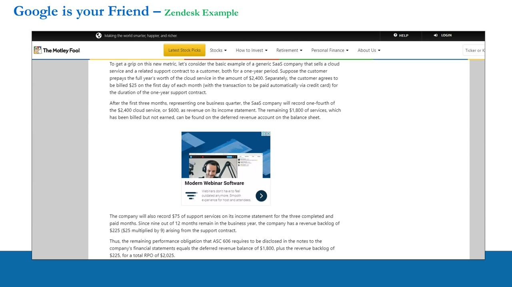
Do your own work — geographic revenue mix
- Revenue mix by geography (Q4'20* / 2020): United States 51.2% / 52.1%; EMEA 28.9% / 28.4%; APAC 10.5% / 10.8%; Other 9.3% / 8.7%. (*does not add to total due to rounding.)
- Roughly half of Zendesk's revenue originates in the U.S. and half internationally.
- FX-translation risk: a significant Dollar rally versus rest-of-world currencies can derail Revenue Growth when local-currency revenue is translated back into USD for accounting.
- This is qualitative work you do yourself, not something the KPI cards hand you.
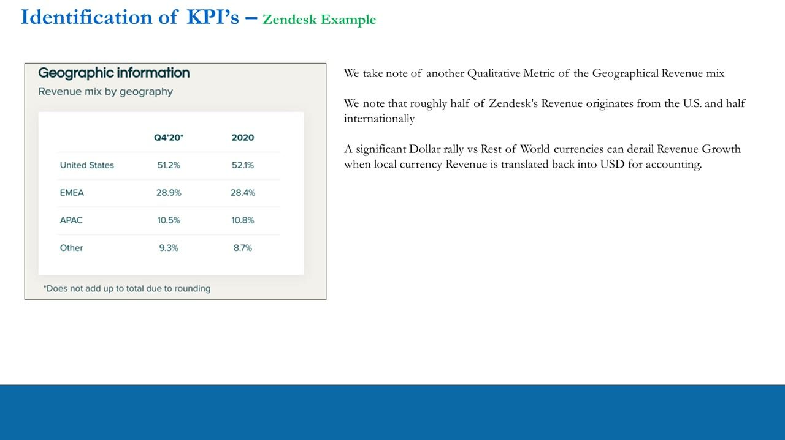
The Zendesk KPI dashboard
- The full inferred KPI set: Indexed New Tickets; Indexed Bookings (New Business & Expansion) close to +60%; Dollar-Based Net Expansion Rate 110%-120%; % of total ARR by $100K+ customers 49%; % of Support ARR from customers w/ 100+ agents 44%.
- Total RPO % Growth +44%; Long-Term RPO % +65%; Short-Term RPO % +36%.
- Customer accounts (QoQ, computed yourself from raw counts): Zendesk Support +2% to +3%; Zendesk Chat -2% to -3%; other Zendesk products +8% to +9%; Total Customer Accounts +2% to +3%.
- These are the key metrics beneath Revenue and Earnings and are what drives them — the KPIs of a company measure the effectiveness of the MOP.
From this dashboard the MOP can be inferred: triple revenue in 5 years / ~26% growth in 2021; grow total accounts 2-3%/qtr; 'stop the bleed' at Zendesk Chat (negative account growth) by bundling; blend the fast-growing other products (8-9%/qtr) into packages; maintain net expansion at 110-120%; keep a healthy enterprise-vs-SMB ARR mix; deliver on RPO through retention.
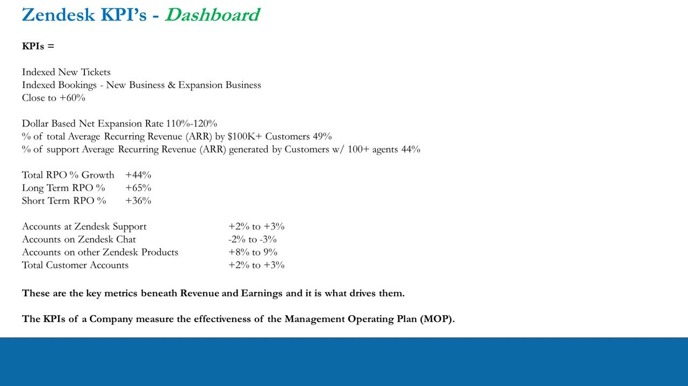
The questions we ask of KPIs
- What will change Revenue and Earnings up or down?
- How does the company measure its operation other than Revenue and Earnings? What are these 'other' financial metrics (KPIs) actually showing?
- How is the company achieving its superior growth — or why is it suffering inferior growth?
- What is the outlook for the KPIs, i.e. the MOP's intentions / targets? And how long will this continue?
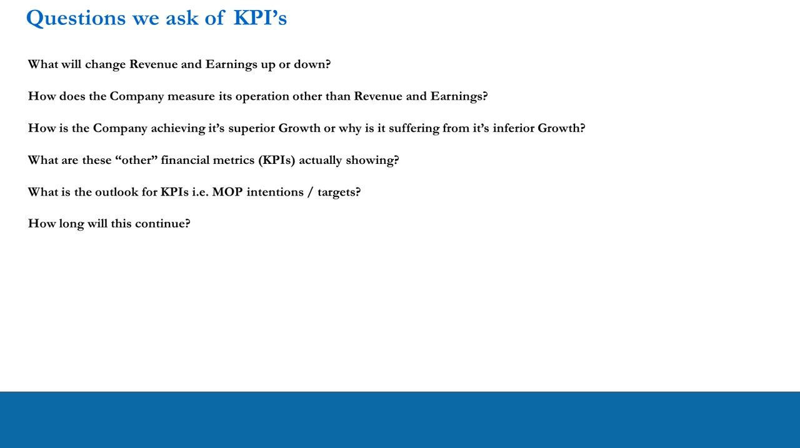
Summary — the business moves the stock before the result
- Recap the map: Quant' Discovery -> Quant' Evidence -> Qual' Drivers, feeding the MOP -> KPIs -> Results chain (identify MOP, identify KPIs).
- Beneath the end result (Revenue & Earnings) there is a business, driven by the MOP and measured by KPIs. Keep asking: why is growth so good (bad)? Does the stock deserve its premium/discount? Will it keep beating (missing)? Is that a high probability? Are there catalysts between earnings that move the stock?
- You do this by first identifying the KPIs and then inferring the MOP. This is how companies measure themselves (guidance) and how analysts measure them to forecast Revenue & Earnings (expectations).
- Any positive or negative change in the KPIs changes the expectations for future Revenue & Earnings. The stock will IMMEDIATELY move on KPI news, and analysts follow by upgrading or downgrading their ratings and price targets.
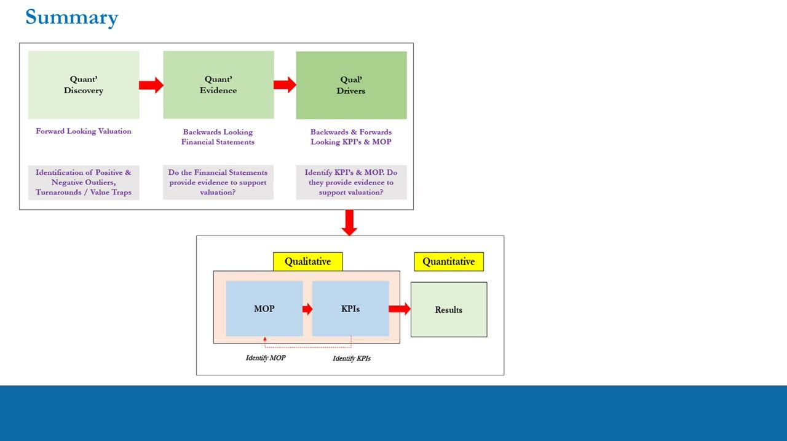
Glossary
- Management Operating Plan (MOP)The plan that DRIVES a business's results (Revenue & Earnings). No company publishes it line-for-line, so you identify the company's KPIs first and INFER the MOP by piecing the clues together. Chain: MOP -> KPIs -> Results.
- KPIs (Key Performance Indicators)The metrics beneath Revenue & Earnings that MEASURE the effectiveness of the MOP. Identified from Investor Relations materials (Events & Presentations, shareholder letters, earnings calls). A change in KPIs changes Revenue/Earnings expectations, so the stock moves on KPI news before the reported result.
- Discovery -> Evidence -> DriversThe three-stage evolution of fundamental analysis: Quant' Discovery (forward-looking valuation, find outliers/turnarounds/value traps) -> Quant' Evidence (backwards-looking financial statements) -> Qual' Drivers (backwards & forwards KPIs & MOP). This lesson is Qual' Drivers.
- Dollar-based net expansion rateQuantifies annual expansion within existing customers = (beginning-period revenue + upgrades - downgrades - churn) / beginning-period revenue; above 100% means growth from the existing base beats losses. Zendesk 112% (Q4'20), healthy range 110%-120%.
- ARR (Annual Recurring Revenue)The contracted recurring revenue of term subscriptions, normalised to one year = yearly subscriptions + expansion revenue - churn; equivalently MRR x 12. Used to track enterprise ARR mix (Zendesk: 49% of total ARR from $100K+ customers; 44% of Support ARR from 100+-agent customers).
- RPO (Remaining Performance Obligations, ASC 606)The aggregate transaction price allocated to performance obligations unsatisfied at period-end. Worked example: $2,400 prepaid cloud (one quarter recognised = $600, deferred $1,800) + $25/mo support (backlog $25 x 9 = $225) = RPO $2,025. Zendesk Total RPO $925mln, +44% y/y (LT +65%, ST +36%).
- Geographic revenue mix / FX-translation riskDo-your-own-work KPI: the split of revenue by region (Zendesk ~51% US, ~49% international). Matters because a strong Dollar can derail reported Revenue Growth when foreign-currency revenue is translated back into USD.